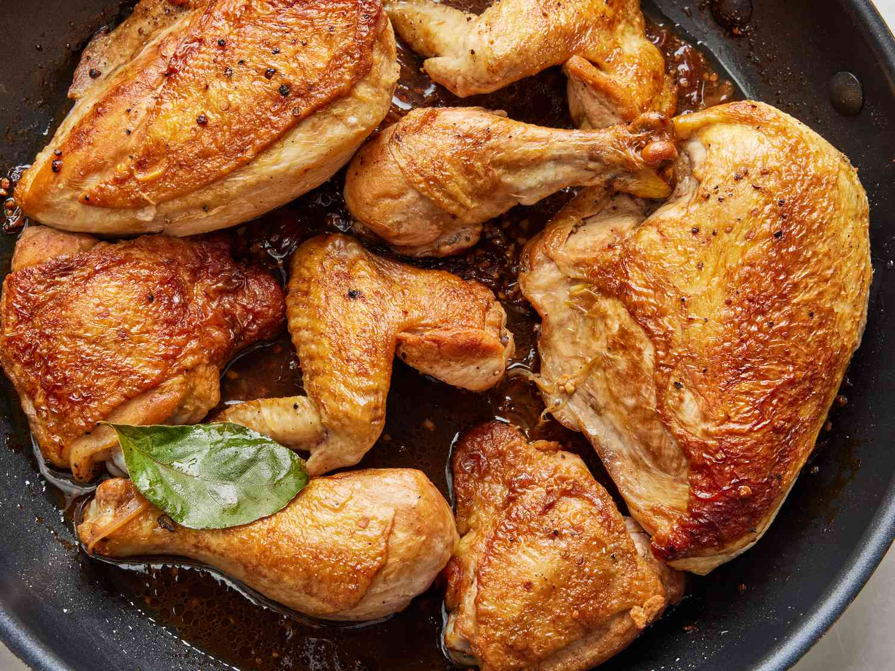

Myles' Recipe for Homemade Chicken Adobo

Ingredients:
For the Seasonings and Meat:
- 1 kg. chicken (preferably thighs)
- 1 cup soy sauce
- 1/2 cup vinegar
- 1 tbsp. brown sugar
- 1 whole piece onion (medium size)
- 1 clove of garlic
- 1/2 tbsp. peppercorn
- 4 pieces bay leaves
- 1 tbsp. cooking oil
- 1 cup of water
For Utensils:
- Wok
- Ladel (wood or metal)
- Spoon
Instructions:
- Saute onions and garlic on medium fire until aromatic.
- Add chicken.
- Saute for a while.
- Add the soy sauce, vinegar, peppercorn, and bay leaves.
- Add 1 cup of water.
- Cover and let it simmer until it is tender (10 minutes).
- Season with brown sugar. (Adjust according to taste)
- Simmer again until cooked.
- Taste the dish to see if there is anything to adjust.
- Serve.